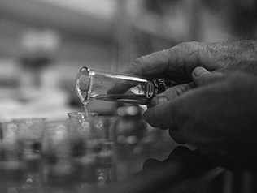

{% for navItem in sections.header.headerNavItems %}
{{navItem}}
{% endfor %}
{{sections.description.copy | safe}}

Close
}}/img/spacer.png)
}}/img/georgia-born.png)
}}/img/american-made.png)
}}/img/zac.png)